Diecast Models
Welcome to the diecast model collection. Click on any thumbnail to view larger images. Items marked with WANTED are items I'm looking for — email me if you have one for sale.
| Picture | Scale | Manufacturer | Item | Packaging | Id# | Country |
|---|---|---|---|---|---|---|
| AUTOart | ||||||
| WANTED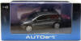 | 1:43 | AUTOart | Mazda 3 MPS, EU Version (Carbon Grey) This model is made by Gateway Global for AUTOart. | Box | 55982 | ? |
| Burago | ||||||
| WANTED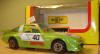 | 1:43 | Burago | Mazda RX-7 SA rally car No.40. | Box | ??? | ? |
| WANTED | 1:43 | Burago | Mazda RX-7 FD type R (1991). Limited Edition 2016 world wide | Box | K03701R | 🇯🇵 |
| WANTED | 1:43 | Burago | Mazda RX-7 FD type R (1991). | Box | K03701Y | 🇯🇵 |
| WANTED | 1:43 | Burago | Mazda RX-7 FD type RZ (1995). | Box | K03702BK | 🇯🇵 |
| WANTED | 1:43 | Burago | Mazda RX-7 FD type R Bathurst X RHD (1995) | Box | K03702W | 🇯🇵 |
| WANTED | 1:43 | Burago | Mazda RX-7 FD type RS-R. Sunburst yellow RHD. Limited Edition 1200 world wide | Box | K03702Y | 🇯🇵 |
| WANTED | 1:43 | Burago | Mazda RX-7 FD Spirit R Type A. Titanium Grey Metallic RHD. Limited Edition 1200 world wide | Box | K03703GY | 🇯🇵 |
WANTED |
1:43 | Burago | Hows ä kt Mazda RX-7 FD type R Bathurst (2001). Limited Edition 2496 world wide | Box | K03703BL | 🇯🇵 |
| HPI | ||||||
| WANTED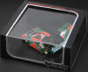 | 1:43 | HPI | Mazda 787B c ar No.55 Le Mans winner 1991. Limited Edition 5024 world wide | Box | 937 | ? |
| WANTED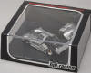 | 1:43 | HPI | Mazda 787B Plain Color Model Dark Silver. Limited Edition 1600 world wide | Box | 998 | ? |
| WANTED | 1:43 | HPI | Mazda 787B Plain Color Model Black KidBox version. | Box | 2-998 | ? |
| WANTED | 1:43 | HPI | Mazda 787B c ar No.202 JSPC 1991. Limited Edition 2688 world wide | Box | 8039 | ? |
| WANTED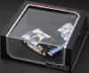 | 1:43 | HPI | Mazda 787B c ar No.18 Le Mans 1991. Limited Edition 3200 world wide. | Box | 8083 | ? |
| Kyosho | ||||||
WANTED |
1:43 | Kyosho | Mazda RX-7 FD type RB Bathurst X (1995) | Box | 03702W | 🇯🇵 |
WANTED |
1:43 | Kyosho | Mazda RX-7 FD type R (1991) | Box | K03701Y | 🇯🇵 |
WANTED |
1:64 | Kyosho | Mazda RX-7 FD | Box | ??? | 🇯🇵 |
| WANTED | 1:18 | Kyosho | Mazda Miata MX-5 in racing green hardtop | Box | 7011 | 🇯🇵 |
| WANTED | 1:18 | Kyosho | Mazda Miata MX-5 this is the stripped down version without the hard top etc | Box | 7011JZ | 🇯🇵 |
| WANTED | 1:18 | Kyosho | Mazda Miata MX-5 in yellow | Box | 8051Y | 🇯🇵 |
| WANTED | 1:18 | Kyosho | Mazda Miata MX-5 in Green | Box | 8051G | 🇯🇵 |
| WANTED | 1:18 | Kyosho | Eunos MX-5 in This is the Japanese version | Box | 7004G | 🇯🇵 |
| WANTED | 1:18 | Kyosho | Eunos MX-5 in This is the Japanese version | Box | 7004R | 🇯🇵 |
| WANTED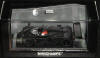 | 1:43 | Kyosho | Mazda 787B Homologation In Black test car. Limited Edition 1536 world wide. | Box | 433911693 | 🇯🇵 |
WANTED |
1/43 | Kyosho | Mazda Cosmo Sport Marathon de La Route car No.18 1968. Limited Edition 1500 world wide. Release date 2003 | Box | H7436818 | 🇯🇵 |
| WANTED | 1/43 | Kyosho | Mazda Cosmo Sport Marathon de La Route car No.19 1968. Limited Edition 1500 world wide. Release date 2003 | Box | H7436819 | 🇯🇵 |
| RealToy | ||||||
WANTED |
??? | RealToy | Mazda RX-8 yellow. from the "Action City Fast Wheels" series. | Box | 18242 | |
WANTED |
??? | RealToy | Mazda RX-8 Red. from the "Action City Fast Wheels" series. | Box | ??? | |
| Yodel - Real-X | ||||||
| ✓ HAVE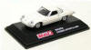 | 1:72 | Yodel - Real-X | Mazda Cosmo Sport L10B White. This model is from the "Mazda Rotary Histories Collection". The release date of this series was 2005. | Box | T4979854 508207 (this is just the barcode as I can't find anything else) | 🇯🇵 |
| WANTED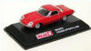 | 1:72 | Yodel - Real-X | Mazda Cosmo Sport L10B Red. This model is from the "Mazda Rotary Histories Collection" The release date of this series was 2005. | Box | T4979854 508207 | 🇯🇵 |
WANTED |
1:72 | Yodel - Real-X | Mazda Cosmo Sport L10B Silver. This model is from the "Mazda Rotary Histories Collection". The release date of this series was 2005. | Box | T4979854 508207 | 🇯🇵 |
WANTED |
1:72 | Yodel - Real-X | Mazda Cosmo Sport L10B "secret" colour Racing. This model is from the "Mazda Rotary Histories Collection". The release date of this series was 2005. | Box | T4979854 508207 | 🇯🇵 |
| WANTED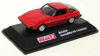 | 1:72 | Yodel - Real-X | Mazda RX-7 Savanna SA Red. This model is from the "Mazda Rotary Histories Collection". The release date of this series was 2005. | Box | T4979854 508207 | 🇯🇵 |
WANTED |
1:72 | Yodel - Real-X | Mazda RX-7 Savanna SA Metallic Green. This model is from the "Mazda Rotary Histories Collection". The release date of this series was 2005. | Box | T4979854 508207 | 🇯🇵 |
WANTED |
1:72 | Yodel - Real-X | Mazda RX-7 Savanna SA Yellow. This model is from the "Mazda Rotary Histories Collection". The release date of this series was 2005. | Box | T4979854 508207 | 🇯🇵 |
WANTED |
1:72 | Yodel - Real-X | Mazda RX-7 Savanna FC White. This model is from the "Mazda Rotary Histories Collection". The release date of this series was 2005. | Box | T4979854 508207 | 🇯🇵 |
WANTED |
1:72 | Yodel - Real-X | Mazda RX-7 Savanna FC Red. This model is from the "Mazda Rotary Histories Collection". The release date of this series was 2005. | Box | T4979854 508207 | 🇯🇵 |
WANTED |
1:72 | Yodel - Real-X | Mazda RX-7 Savanna FC Gun Metal Gray. This model is from the "Mazda Rotary Histories Collection". The release date of this series was 2005. | Box | T4979854 508207 | 🇯🇵 |
WANTED |
1:72 | Yodel - Real-X | Mazda RX-7 ēfini FD Black. This model is from the "Mazda Rotary Histories Collection". The release date of this series was 2005. | Box | T4979854 508207 | 🇯🇵 |
WANTED |
1:72 | Yodel - Real-X | Mazda RX-7 ēfini FD Red. This model is from the "Mazda Rotary Histories Collection". The release date of this series was 2005. | Box | T4979854 508207 | 🇯🇵 |
| WANTED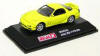 | 1:72 | Yodel - Real-X | Mazda RX-7 ēfini FD Yellow. This model is from the "Mazda Rotary Histories Collection". The release date of this series was 2005. | Box | T4979854 508207 | 🇯🇵 |
WANTED |
1:72 | Yodel - Real-X | Mazda RX-3 Savanna Red. This model is from the "Mazda Rotary Histories Collection 2nd". | Box | ??? | 🇯🇵 |
WANTED |
1:72 | Yodel - Real-X | Mazda RX-3 Savanna Yellow. This model is from the "Mazda Rotary Histories Collection 2nd". | Box | ??? | 🇯🇵 |
| WANTED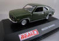 | 1:72 | Yodel - Real-X | Mazda RX-3 Savanna Green. This model is from the "Mazda Rotary Histories Collection 2nd". | Box | ??? | 🇯🇵 |
| WANTED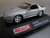 | 1:72 | Yodel - Real-X | Mazda RX-7 Savanna FC Silver. This model is from the "Mazda Rotary Histories Collection 2nd". | Box | ??? | 🇯🇵 |
| WANTED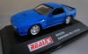 | 1:72 | Yodel - Real-X | Mazda RX-7 Savanna FC Blue. This model is from the "Mazda Rotary Histories Collection 2nd". | Box | ??? | 🇯🇵 |
| WANTED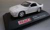 | 1:72 | Yodel - Real-X | Mazda RX-7 Savanna FC White. This model is from the "Mazda Rotary Histories Collection 2nd". | Box | ??? | 🇯🇵 |
| WANTED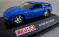 | 1:72 | Yodel - Real-X | Mazda RX-7 FD Blue. This model is from the "Mazda Rotary Histories Collection 2nd". | Box | ??? | 🇯🇵 |
| WANTED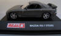 | 1:72 | Yodel - Real-X | Mazda RX-7 FD Black. This model is from the "Mazda Rotary Histories Collection 2nd". | Box | ??? | 🇯🇵 |
| WANTED | 1:72 | Yodel - Real-X | Mazda RX-7 FD Silver. This model is from the "Mazda Rotary Histories Collection 2nd". | Box | ??? | 🇯🇵 |
WANTED |
1:72 | Yodel - Real-X | Mazda RX-8 Red. This model is from the "Mazda Rotary Histories Collection 2nd". | Box | ??? | 🇯🇵 |
WANTED |
1:72 | Yodel - Real-X | Mazda RX-8 Yellow. This model is from the "Mazda Rotary Histories Collection 2nd". | Box | ??? | 🇯🇵 |
WANTED |
1:72 | Yodel - Real-X | Mazda RX-8 Black. This model is from the "Mazda Rotary Histories Collection 2nd". | Box | ??? | 🇯🇵 |
| WANTED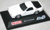 | 1:72 | Yodel - Real-X | Mazda RX-7 FC ∞ III Initial D White. | Box | ??? | 🇯🇵 |
WANTED |
1:72 | Yodel - Real-X | Mazda RX-7 ēfini FD Initial D Black. | Box | ??? | 🇯🇵 |
WANTED |
1:72 | Yodel - Real-X | Mazda RX-8 Yellow. This model is from the "Mini Car Collection Part 6". | Box | ??? | 🇯🇵 |